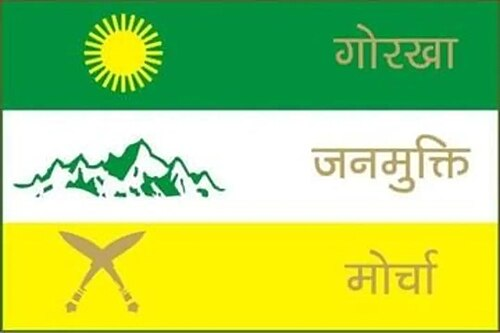

RESTRICTED INTELLIGENCE DOSSIER
WHO REALLY CONTROLS DARJEELING?
THE POLITICAL CHESSBOARD
Darjeeling politics has evolved into a constant struggle for territorial influence, identity politics, party dominance, and emotional public mobilization. Different political organizations claim to represent “the people”, yet many citizens question whether the hills are truly being developed or merely politically controlled. Movements rise. Leaders change. Flags change. But systems of influence often remain untouched.

GJM
BJP
TMC
THE QUESTION PEOPLE ASK
Why does every institution, event, organization, or local body appear politically connected? Why do party symbols and political influence reach educational institutions, public spaces, student groups, and social programs? Is leadership serving the hills, or are the hills serving political branding?
THE BUSINESS OF EMOTION
Emotion has become one of the strongest political weapons in the hills. Identity, fear, regional insecurity, historical pain, and emotional loyalty are repeatedly used to mobilize people. The public remains divided, while political ecosystems continue expanding.
INTELLIGENCE NOTE
Political loyalty in the hills often becomes stronger than public accountability. Citizens emotionally defend parties, while development, employment, infrastructure, education, and transparency remain debated topics.
END OF DOSSIER
THE HILLS REMEMBER EVERYTHING.
Political movements rise. Parties change. Flags disappear. But systems of influence survive through fear, emotion, dependency, and silence. The real battle is no longer political. It is psychological.

Author
Victor Reznov
Founder • H.U.N.T.R.E.S.S